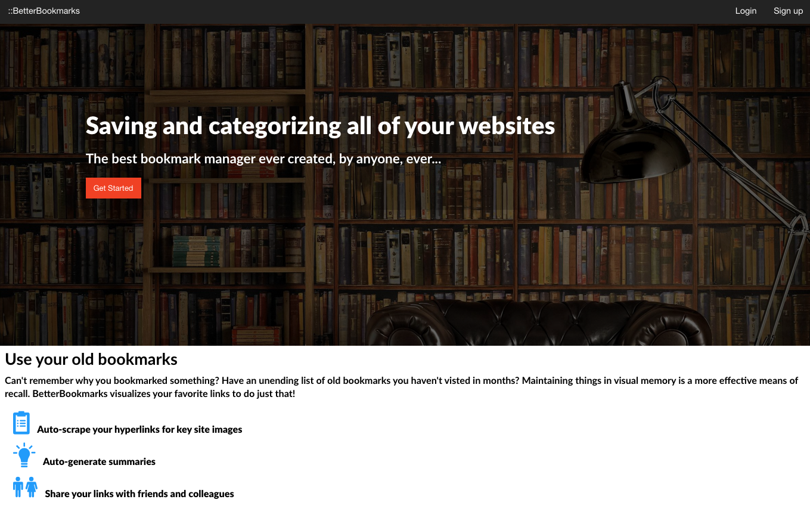
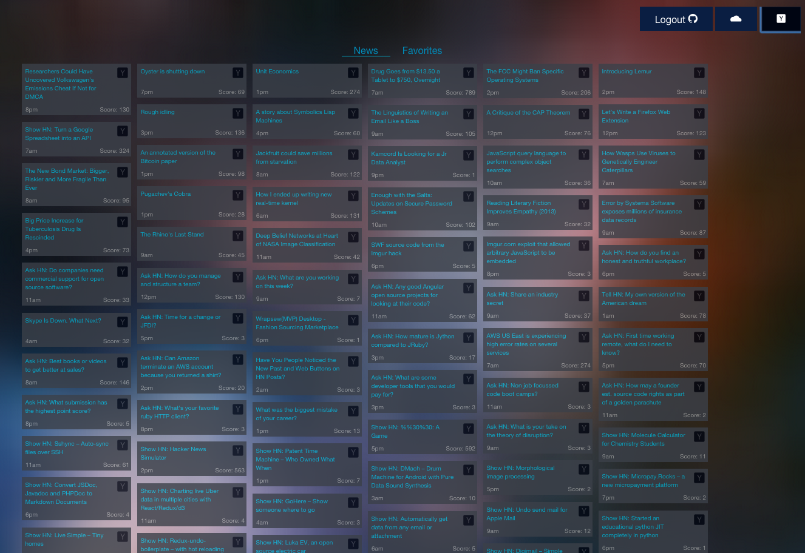
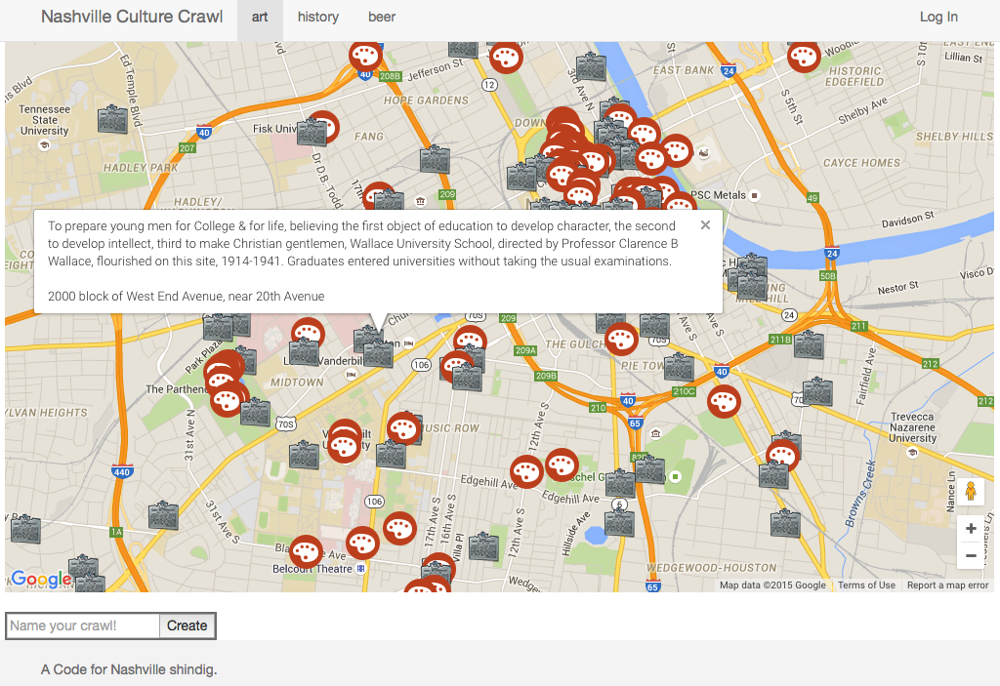

BetterBookmarks
This post is filed under PROJECTS
|||
Published SEPTEMBER 2015

An application for visualizing, organizing, and sharing your bookmarks. Gone are the days of massive unorganized lists of hyperlinks that go unused and forgotten. Built with Angular and Foundation on the front-end and Node, Express, MongoDB, and Mongoose on the back-end.
BetterBookmarks App Demo
BetterBookmarks App Code
Swiss Army App
This post is filed under PROJECTS
|||
Published SEPTEMBER 2015

SWA is a client side app for reading and archiving Y-Combinator’s Hacker News articles. Built with AngularJS, UI-Router, Firebase, and Foundation. Exposed low level deferred/promise APIs using AngularJS $http service. And like any good NSS build, it’s also a weather app.
Swiss Army App Demo
Swiss Army App Code
Nashville Culture Crawl
This post is filed under PROJECTS
|||
Published SEPTEMBER 2015

An application for directing your adventure around Nashville (if that adventure includes art, history, and beer). I built this application in collaboration with three other NSS students during the National Day of Civic Hacking . Built with jQuery and plain old JavaScript, we plugged into the Google Maps API for users to lead a self guided tour through Nashville. Cultural, historical and beer related information was provided at each checkpoint using data from the Nashville Open Data Portal.
Nashville Culture Crawl Demo
Nashville Culture Crawl Code